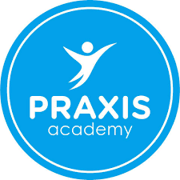
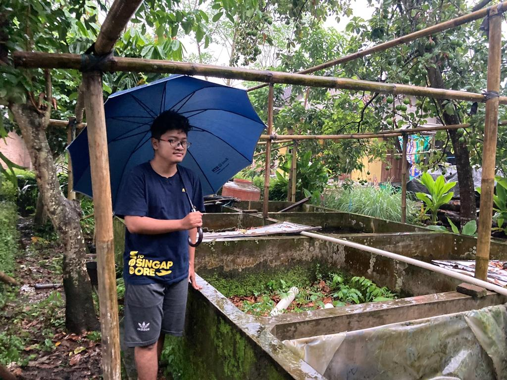

Praxis Academy Internship 2023

Praxis Academy is a programming school that specifically handles enterprise level applications.
We use the Java platform for the back end and JavaScript.
Front End Developer
A Front-End Developer is someone who creates websites and web applications.
The Front-End Developer creates things that the user sees. It is a popular job,
and everyone can become a Front-End Developer. It is fun and creative.
It is flexible and you can work from anywhere! Many companies are looking for Front-End Developers.
IUP Elins UGM 2020 students
The second day of my internship at Praxis Academy, I learned about creating websites with various features.
One of the features I learned today is headers and footers which can work when learning about css.
Look forward to my next progress :)
About Me

Nama lengkapku adalah Muhammad Fithroh Fajar Ramadhan Syarief Hidayatullah
Aku berasal dari Klaten dan sekarang menempuh semester ke 6 di Universitas Gadjah Mada.
Jurusanku adalah Elektronika dan Instrumentasi dari FMIPA angkatan 2020.
Hobiku adalah Futsal dan menulis, dan aku suka mengcoding juga.